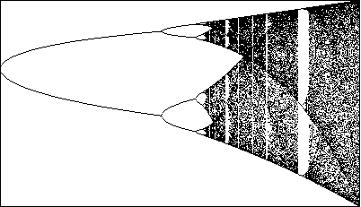

|  |
| Click the picture for a longer zoom. |
Each periodic window contains small copies of the entire diagram. In the more general sense we discussed earlier, the logistic bifurcation diagram is a fractal.
Return to Bifurcation Diagrams for the Logistic Map.